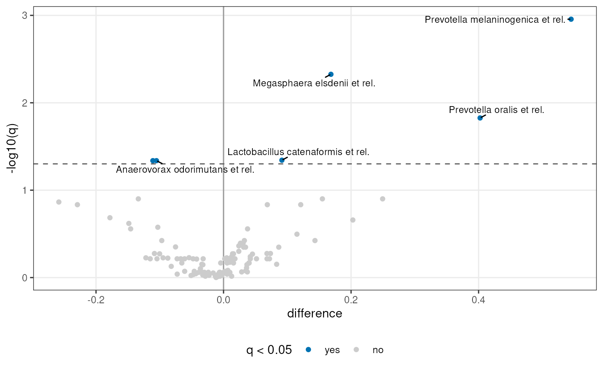

Plot effects against their significance
Source:R/AllGenerics.R, R/plotVolcano.R, R/zzz-mae.R
plotVolcano.RdplotVolcano() draws the effect of each feature against
\(-\log_{10}\) of its p-value and labels the strongest hits.
Usage
plotVolcano(x, ...)
# S4 method for class 'SummarizedExperiment'
plotVolcano(
x,
effect,
p.col,
threshold = 0.05,
label.top = 10,
feature.col = NULL,
...
)
# S4 method for class 'data.frame'
plotVolcano(
x,
effect,
p.col,
threshold = 0.05,
label.top = 10,
feature.col = NULL,
...
)
# S4 method for class 'MultiAssayExperiment'
plotVolcano(x, ..., experiment = 1L)Arguments
- x
a
SummarizedExperimentobject, with the results inrowData(x), or adata.frameof results with one row per feature.- ...
additional arguments passed to
geom_point.- effect
Character scalar. Specifies the column holding the effects, such as log fold changes or slopes.- p.col
Character scalar. Specifies the column holding the p-values or adjusted p-values.- threshold
Numeric scalar. Features withp.colbelow this are significant. (Default:0.05)- label.top
Integer scalar. Labels this many significant features with the smallest p-values. (Default:10)- feature.col
Character scalar. Specifies the column of feature names that label the points, ofrowData(x)or of thedata.frame. IfNULL, uses the row names. (Default:NULL)- experiment
Character scalarorinteger scalar. For aMultiAssayExperiment, the experiment to plot; its samples get thecolDataofx. (Default:1L)
Examples
# Differences between men and women at the first sample of each subject
data("hitchip1006", package = "miaTime")
tse <- hitchip1006[, hitchip1006$time == 0 & !is.na(hitchip1006$sex)]
tse <- mia::transformAssay(tse, method = "clr", pseudocount = 1)
mat <- SummarizedExperiment::assay(tse, "clr")
male <- tse$sex == "male"
res <- data.frame(
genus = rownames(tse),
difference = rowMeans(mat[, male]) - rowMeans(mat[, !male]),
p = apply(mat, 1, function(v) wilcox.test(v[male], v[!male])$p.value))
res$q <- p.adjust(res$p, method = "fdr")
plotVolcano(res, effect = "difference", p.col = "q", label.top = 5,
feature.col = "genus")
